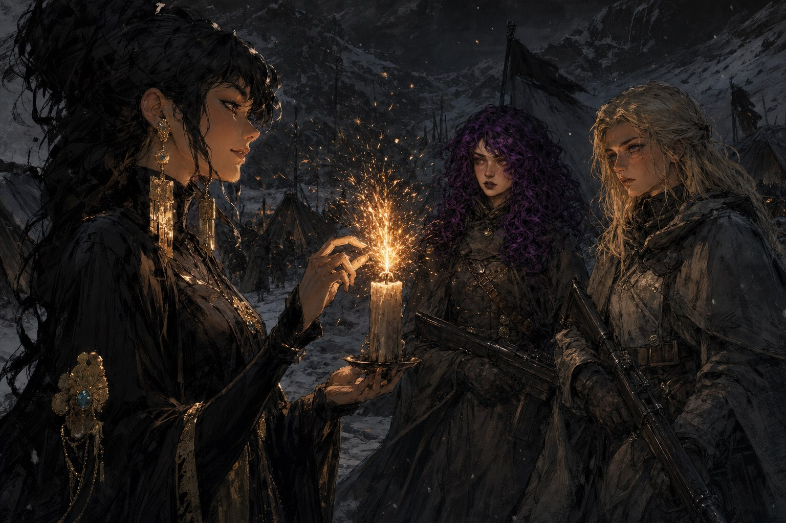
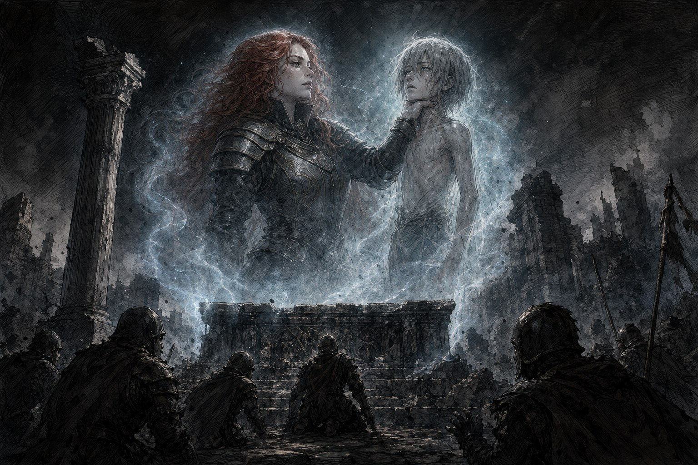

구제국력 848년, 초겨울. 군단은 하늘길의 고산지대에 이르러, 지붕이 무너지고 벽만 남은 작은 마을의 민가를 겨우 정비해 야영지를 차렸다. 바람을 막기에는 없는 것보다 나았다. 계절은 이제 갓 겨울에 들어섰을 뿐인데도 고산의 추위가 병사들의 손과 귀를 얼어붙게 했고, 눈은 소리 없이 내렸다. 마을 한가운데 지휘소에서 경계를 서던 헤이즈와 베일리가 추위에 손을 떨며 서로 말이 헛나온다고 티격거리는 사이, 임무를 맡은 특수병들이 브리핑을 위해 모여들었다. 조라와 갈라져 하늘길을 택한 군단의, 하늘화살 성채를 앞둔 마지막 작전이었다.
레이피어의 브리핑
지휘소로 들어온 레이피어가 오늘은 자신이 브리핑을 맡겠다며 웃었다. 다만 그 전에, 지난밤 조라에게서 들은 전장의 소식을 먼저 전했다. 조라는 뜻밖에도 친절했고, 말투가 할아버지 같아 삼백 살 먹은 노인과 대화하는 손녀가 된 기분이었다고 했다. 먼저 슈레야였다. 슈레야는 나시엘이 설계한 함정에 걸려 바라크 광산 깊은 갱도에서 움직이지 못하게 되었고, 병사들을 구하려 무너지는 갱도로 뛰어들었다. 잿불의 왕이 잔해에 깔린 슈레야를 향해 손을 뻗었으나, 그는 마지막 힘으로 잔해를 들어올리고 절벽으로 몸을 던졌다. 병사들은 그 유해로 성해를 만들었고, 군단 분파의 사도 자리는 자비사였던 일레나가 이었다. 조라는 “나락”으로 알아볼 것이 있다며 떠났다고 했다.
그리고 뿔 달린 자였다. 레이피어가 입술을 깨물었다. “뿔 달린 자는 분쇄자에 맞서 파냐를 지키려 떠났지만… 타락해버렸다고 해.” 뿔 달린 자의 능력은 상성이 나빠 분쇄자에게 전혀 통하지 않았고, 분쇄자는 그가 타락하면 파냐의 숲을 통째로 살려주겠노라 했다. 숲을 제 명예보다도 생명보다도 사랑한 뿔 달린 자가 택할 답은 하나였다. 그러나 닉스가 타락할 때 달이 부서지고 엘레네사가 타락할 때 연금술이 오염되었듯, 뿔 달린 자가 변이자로 타락하자 파냐의 숲이 전부 불타올랐다. 대화재 속에서 사람도 짐승도 너무 많이 죽었다. 파냐 출신 병사들이 저마다 무너져 슬퍼했다.
임무는 성물 ‘벼락 사슬’을 되찾는 것이었다. 문제는 왜곡자 나시엘도 그것을 노리고 이미 출발했다는 데 있었다. 레이피어는 임무 부대만 북쪽 토대 수도원으로 향하고, 본대는 여기서 기다리지 않고 먼저 하늘화살 성채로 진군할 것이라 했다. 그러면서 주머니에서 쪽지 한 장을 꺼냈다. 왜곡자가 성물을 먼저 쥐었을 때부터 아직 찾지 못했을 때까지, 몇 갈래 시나리오와 그때마다 취할 행동이 빼곡히 적혀 있었다. 피어가 남긴 것이었다. “피어는 정말로, 모든 걸 알고 있었네.” 다만 피어는 사도도 왜곡자도 성물도 예지할 수 없었으니, 그 쪽지는 예언이 아니라 지식과 통찰이었다. 사도에게 반말을 했다며 병사들이 술렁이자 레이피어는 개의치 않았다. “괜찮아. 나는 사도지만.. 신은 아니니까.”
야영지의 왜곡자

가는 길목에서 알더마크에 서식하는 거대한 짐승 베른가드 하나가 부대를 덮쳤다. 언데드에게 먹잇감을 빼앗겨 굶주린 채 동면에 들지 못한 짐승이었다. 도끼와 라이플로 맞섰으나 그 일격은 여섯 단계에 이르렀고, 멜로디와 발티야가 위험을 알아채 모두를 피하게 한 덕에 신병 하나만을 잃고 물러설 수 있었다. 숨결이라는 이름의 어린 병사였다. 전투가 끝나자 은빛 사붓한 바람이 안전한 야영지를 물색해냈고, 그날 밤 불가에서 발티야가 마음의 굳은살에 관한 오래된 이야기를 들려주며 병사들의 지친 마음을 달랬다.
불침번을 서던 보라 키리시 앞에, 금빛 귀걸이를 한 여성이 나타났다. 추위도 타지 않는 그녀의 목소리는 이 세계의 것이라고는 믿기 힘들 만큼 매력적이었고, 홀린 보라는 어디든 따라가겠다는 듯 손을 내밀었다. 그때 함께 불침번을 서던 멜로디가 그 모습을 보고 외쳤다. 처음에는 자매님, 그다음에는 보라야, 끝내는 풀네임을 목이 터져라 부르며 손을 낚아챘다. 정신 지배 저항의 약까지 삼키며 버틴 끝에, 두 사람은 왜곡자 나시엘과 마주 섰다.
나시엘의 입에서 나온 것은 충격 그 자체였다. 자신은 잿불의 왕을 죽이고 싶다는 것, 그리고 자신은 언데드가 아니라 인간이라는 것이었다. 그가 제 뺨을 매만졌다. “내가 언데드라면 너의 흑색탄이 내 뺨에 스쳤을 때 초록색 불꽃이 튀었어야 해. 실제론 그렇지 않았어.” 팔카의 산채에서 글리노어의 탄환이 스쳤을 때 아무 일도 없었던 그 순간의 진실이었다. 나시엘은 타락한 적이 없었다. 애초에 사도였던 적조차 없었다. 그는 연구 끝에 연금술의 원리 자체를 제어하게 되어, 신의 선택 없이 제 힘으로 사도가 된 척 세상을 속였을 뿐이었다. 사도가 아니었기에 타락하지도 않았고, 타락이 무엇인지 알았기에 잿불의 왕마저 기만할 수 있었다.
그가 바닥에 놓인 초 하나를 집어 들자, 마법 같던 매혹이 스르르 걷혔다. 두 손가락으로 심지를 눌러 껐다가 떼자 촛불이 폭죽처럼 맹렬히 타올랐다. “신들은 사도에게 새로운 힘을 주는 것이 아니야. 사도라는 건 인간의 내면에 이미 존재하는 불꽃에 다시 불을 붙일 뿐이야.” 춤추는 빛과 그림자 속에서 그의 표정은 즐거운 듯 쓸쓸한 듯 읽기 어려웠다. “그게 가능한 이유는, 그래. 모든 인간은 이미..” 촛불이 픽 꺼지며 어둠이 내렸다. “사도이기 때문이지.” 어둠 속에서 나시엘은, 자신에게도 폭죽처럼 타오르는 초 하나가 있었노라 했다. 그 저주받은 불꽃을 원래대로 되돌리고 싶어 사도가 되고 타락자가 되었으나, 슈는 단 한 번도 자신의 말을 들어준 적이 없었다는 것을 잊고 있었다고. 처음으로 그의 목소리에 감정이 배어났다. “결국 난 슈도 잃었고, 인류의 반역자도 됐어.” 사도의 힘은 남은 생명력을 태워 없애는 신들의 저주였고, 나시엘은 오직 사랑하는 이의 삶을 늘리려 인류 전체를 적으로 돌린 것이었다.
군단은 이번만은 나시엘과 손을 잡기로 했다. 다만 지휘관 도베르트는 못을 박았다. “당신이 지금까지 저지른 짓에 대해서는 마땅한 죗값을 치르게 될 것이라는 것을 잊지 마시오. 당신의 그 능력과 재능을 어느 신도 사지 않았다는 것을 기억하시오.” 멜로디 또한 물러서지 않았다. “당신의 ‘슈’를 되찾기 위해 수많은 전우들이 목숨을 잃었어요. 그건 없는 일이 되지 않아요.”
토대 수도원
얼음과 눈으로 뒤덮인 산악 한가운데, 수도원이라기보다 고대 유적에 가까운 토대 수도원이 서 있었다. 살을 도려내는 눈바람 속, 중앙과 벽 위에는 베른가드 열두 마리가 제집인 양 뒹굴고 있었다. 약속대로 나타난 나시엘이 죽음처럼 차가운 웃음을 지으며 손을 들었다. “덤벼, 강아지들아.” 그가 가리킨 베른가드가 온몸이 검게 변해 쓰러졌고, 달려드는 것들 위로 절벽에서 태엽 자객 루고스가 떨어져 목덜미를 터뜨리며 벽에 올라섰다. 사슬과 갈고리를 두른 흉물이, 호스로 초록빛 독을 뿜는 거대한 짐승이 뒤따랐다. 베른가드 하나가 루고스를 붙잡아 벽에 내던지자 기계 파편이 튀었다. 레이피어가 경악했다. “저런 것들과… 싸워야 했었다고?” 왜곡자와 정면으로 부딪쳤다면 부대가 어찌 되었을지, 멀찍이서 지켜보는 것만으로도 알 수 있었다.
제단이 보여준 것

유적의 심장부는 깊은 어둠 속으로 무너져 내린 거대한 공동이었다. 마법으로 타오르는 횃불이 넘어져서도 빛을 냈고, 금속과 돌의 날카로운 냄새가 코를 찔렀다. 도베르트와 바람은 강한 기시감을 느꼈다. 라하자르가 잿불의 왕의 이름을 처음 알아냈던 그 제단, 피어가 자신이 누구의 사도인지 깨달았던 바로 그 자리였다. 중앙의 원형 제단에 이르렀을 때, 남쪽에서 낯익은 얼굴들이 웅성거리며 들어왔다. 그리고 그 사이로, 푸른 숲의 가을바람을 두른 채 피어가 걸어들었다. 레이피어가 눈물을 참지 못하고 그를 불렀으나 피어에게는 들리지 않는 듯했다. 이 제단은 시간과 공간을 넘어, 신의 힘을 다루는 자들을 서로 잇는 자리였다. 지금의 레이피어가, 과거의 피어에게 그가 이름 없는 신의 사도임을 알려주는 순간이었다. 피어가 놀란 눈으로 무언가 말하려다 휘청이고, 연결이 흐려졌다.
이어 서쪽에서 라하자르 일행의 목소리가 들려왔다. 그렇다면 이제 라하자르에게 잿불의 왕의 이름을 전해야 했다. 그 이름을 입에 올리면 부패를 뒤집어쓴다는 저주가 있었으나, 레이피어는 피어의 성해를 손에 꼭 쥐었다. “피어. 나를 지켜줘.” 그리고 조용히 말했다. “이름없는 신의 첫 번째 사도는 세히사 셀리만이다.” 눈을 질끈 감았지만, 한참이 지나도 아무 일도 일어나지 않았다.
그때 북쪽의 보이지 않던 난간에 세히사 셀리만이 나타났다. 조라에게 목을 붙잡힌, 190년 전의 광경이었다. 조라는 이름을 말하라 다그쳤고, 세히사는 다르의 사람들을 살려달라 애원했다. “이름없는 신은 다르 그 자체야! 이름없는 신을 죽이면 다르가 불타올라 사라지고, 결국 그 사람들도 전부 죽는다고!” 조라는 세히사가 보는 앞에서 다르인들을 하나하나 살해했다. 두 살 위 누나를, 어머니와 아버지를, 겨우 걷기 시작한 늦둥이 동생을, 그를 따르던 신도들까지. 그럼에도 세히사는 끝내 제 이름도 신의 이름도 말하지 않았다. 그의 의지는 꺾이지 않았으나 마음은 산산이 부서졌고, 사도의 부서진 마음은 세계를 저주했다. 그렇게 다르는 사람이 살 수 없는 땅이 되었고, 다르인들은 머리색을 잃고 땅을 떠나면 검은 피를 흘리며 죽는 신세가 되었다.
레이피어가 무릎을 꿇고 흐느끼는 앞에서, 조라는 품에서 청색과 백색의 번개 무늬가 새겨진 가느다란 쇠사슬을 꺼냈다. 부대가 되찾으러 온 바로 그 벼락 사슬이었다. 조라가 그것을 채찍처럼 내리치자 천둥 같은 굉음이 울리며 제단이 갈라지고 북쪽 난간이 무너졌다. “이건 부작용이 있군. 더이상 쓰지 못하겠소.” 그는 사슬을 아무렇게나 등 뒤로 던지고 서쪽 난간으로 사라졌다. 사슬은 무너진 제단 틈에 걸렸다. 레이피어가 깊은 슬픔이 담긴 눈으로 바닥을 내려다보았다. “최초의 타락은 잿불의 왕이 일으킨 것이 아니야. 사도들 마음 속의 어둠이 세히사를, 최초의 타락자로 만든 거야.” 신들의 전쟁을 끝내고 싶었으나 책임지고 싶지 않았던 사도들이 이름 없는 신의 사도를 다르의 악마로 지목했고, 모두가 그리 믿자 그것은 정말로 성전이 되었다. 세히사는 그 믿음 속에서 다르의 악마로 죽었고, 180년 뒤 사도들이 씌운 그 모든 악덕을 스스로 지닌 채 잿불의 왕으로 돌아온 것이었다. “잿불의왕은, 사도들이 만들어낸거야. 나와 같은.” 그 진실 앞에서 레이피어는 떨리는 목소리로 중얼거렸다. 제가 믿었던 모든 게 뒤집어진 것 같다고.
임무 부대는 벼락 사슬을 거두어 무사히 본대에 합류했다. 눈안개 사이로 하늘을 향해 뻗은 높은 탑이 조금씩 드러나자, 눈 밝은 병사들이 손을 뻗으며 탄성을 질렀다. 알더마크의 타락자 무리가 바르타와 동부 전체로 번지는 것을 막을 유일한 보루, 하늘화살 성채였다. 며칠 뒤면 파도 같은 언데드 군세가 밀려올 것이었다. 뼈까지 스미는 추위 속에서, 군단은 마침내 마지막 목적지에 도착했다.